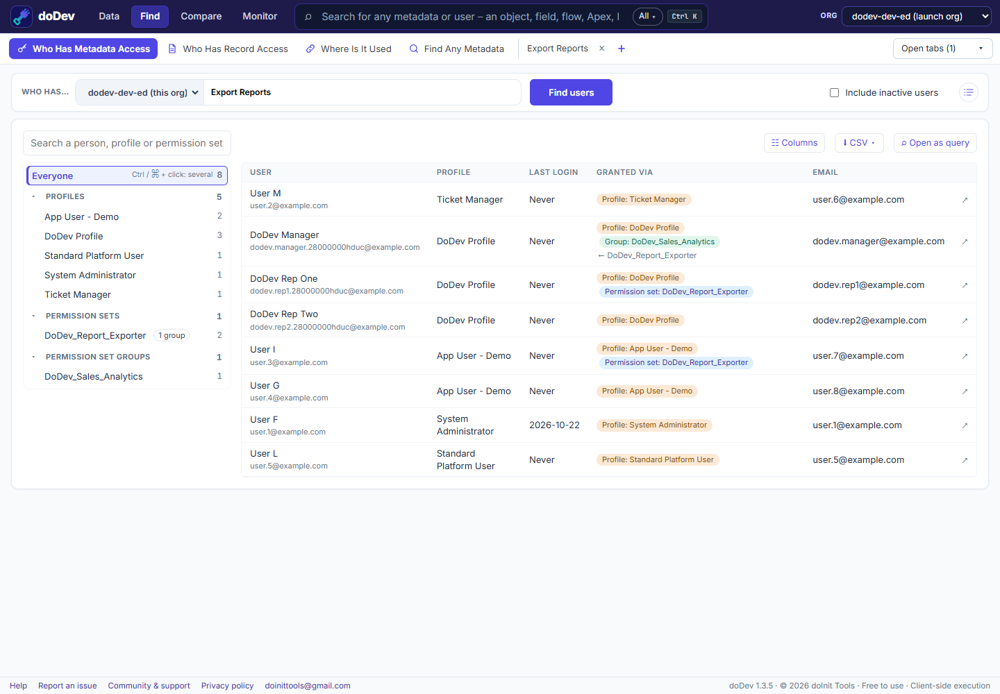
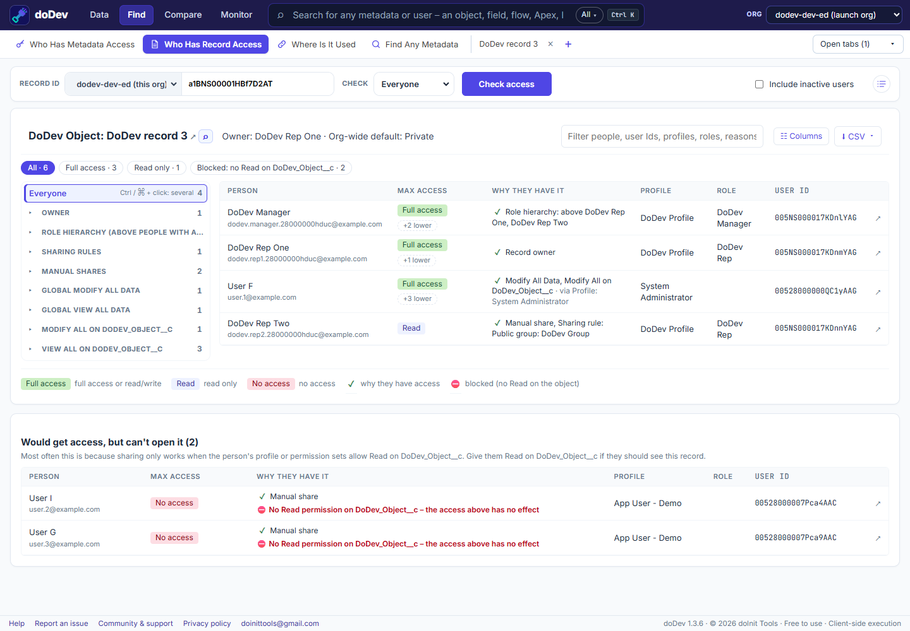
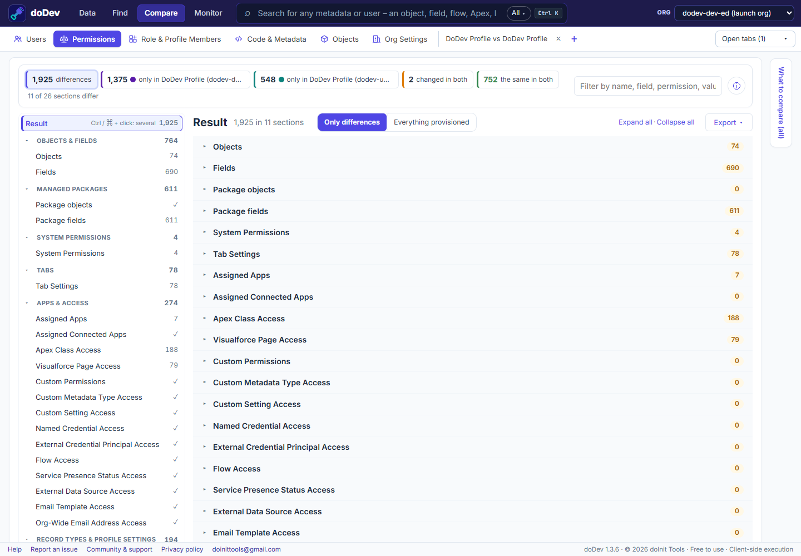
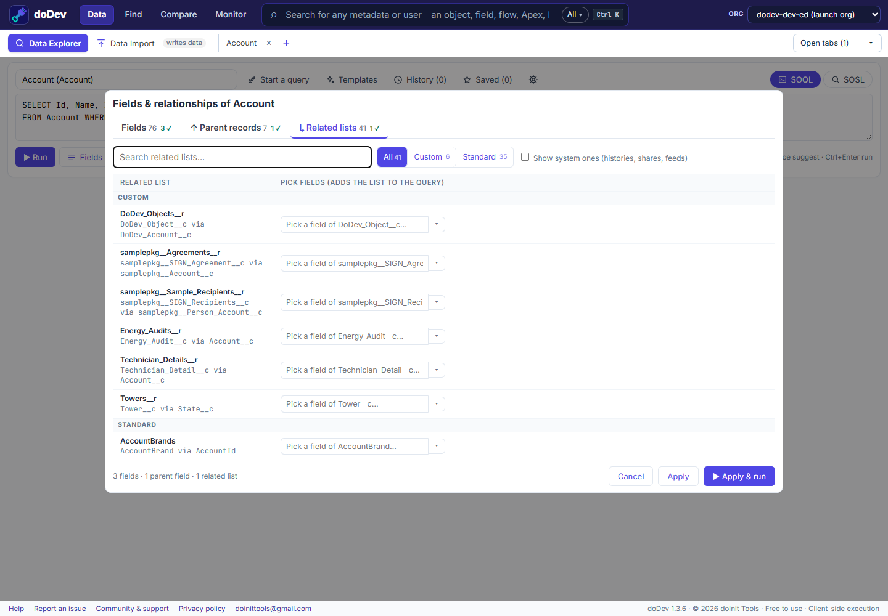
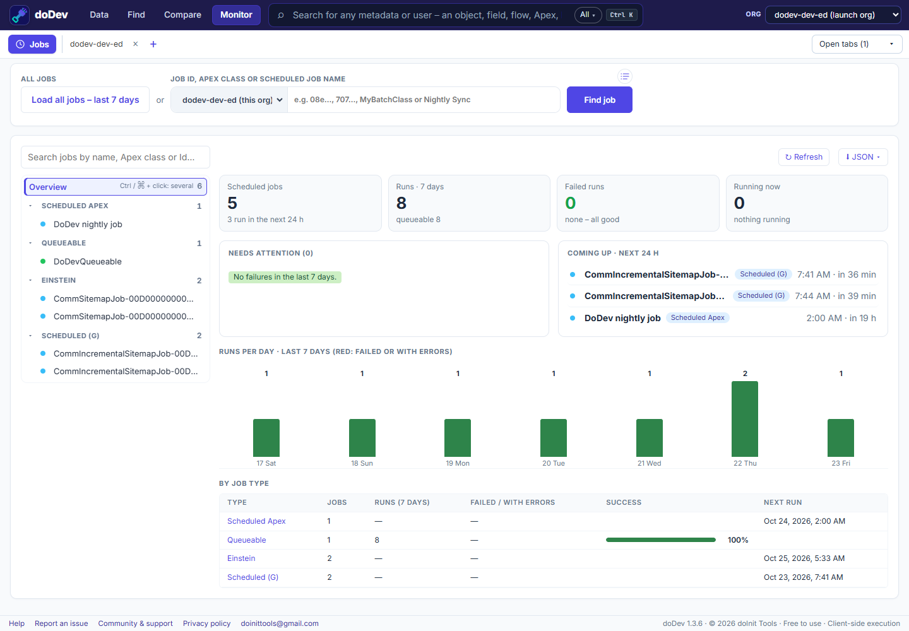
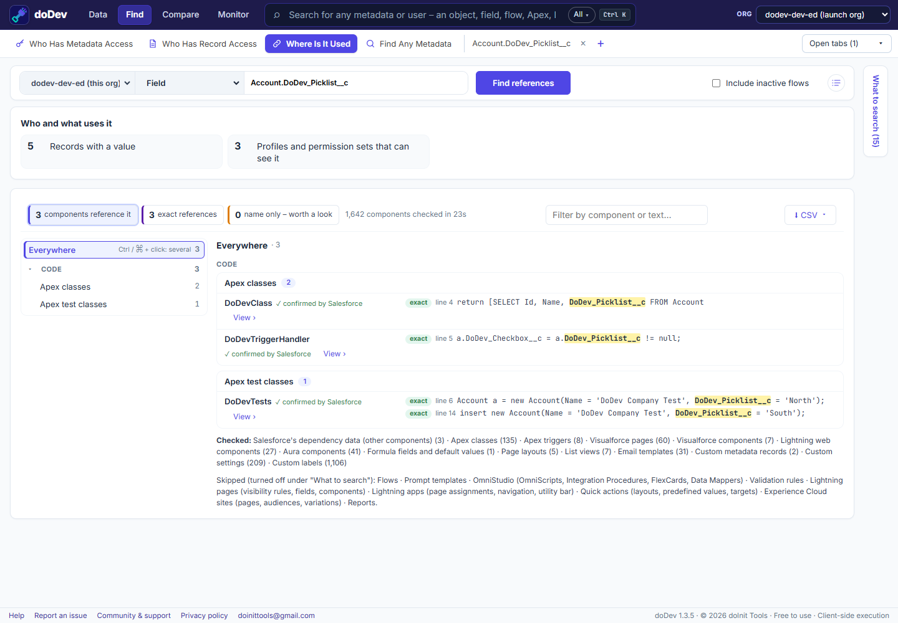

Salesforce dev superpowers for everyone
Find
- Who has access – and why
- Who can open a record
- Where a field is used
- Any metadata, one page
Compare
- Profiles & permission sets
- Users, in one org or two
- Apex & metadata across orgs
- Objects & org settings
Data
- Query without SOQL
- Start from a list view
- Export to Excel or CSV
- Import from CSV
Monitor
- Scheduled & batch jobs
- Failures in the last 7 days
- What runs next
- Any job by Id or class
Who has access in Salesforce – and why
Pick a field, an object or a system permission like Export Reports. See every user who has it, and the exact profile, permission set or permission set group that gives it.
- Read, Edit, Delete, View All and Modify All per user
- Groups shown under the permission set that grants access
- Add any user column, export to CSV
Press Ctrl + K to open any object, field, flow, Apex class, profile or permission set – one page each.
How to see who has access to a field →
Why can this user see this record?
Paste a record ID and see everyone who can open it, grouped by the reason – owner, role hierarchy, sharing rule, team, territory or View All. Or check one user and get the answer straight away.
- Every reason, highest access first
- Who has a share but is blocked by object access
- Confirmed by Salesforce itself

Compare anything – even between orgs
“It works in the sandbox, not in production.” Put the same profile, permission set or user from two orgs side by side and see every difference – objects, fields, system permissions, Apex and Visualforce access, tabs and apps.
- Only in A · only in B · changed in both
- Apex, flows, LWC and labels line by line
- Export, or build a permission set that fills the gap

A SOQL query builder – or no SOQL at all
Start from a list view or a report, check the fields you want – including related records – and run. Prefer SOQL? The editor suggests objects and fields as you type.
- Every row, beyond the 2,000 limit
- Excel, CSV and JSON in one click
- Import, update or delete from CSV – with a preview first

Scheduled and failed Apex jobs at a glance
Setup splits jobs across Scheduled Jobs and Apex Jobs. doDev shows every scheduled, batch, queueable and future job in one place – with its recent runs, failures and the next run.
- Needs attention: failures, worst first
- A 7-day grid of results per job
- The schedule in words, with a countdown to the next run

Where is this field used?
Before you change or delete a field, an Apex class or a flow, see every place it appears – code, flows, formulas, validation rules, page layouts, Lightning pages, list views, reports and more – each match with its line.
How to find where a field is used →
The questions every admin gets – answered in one place
Salesforce Setup has the information. It just spreads it over dozens of pages.
| The question | In Setup | With doDev |
|---|---|---|
| Who can edit this field? | Open every profile and permission set, one by one. | One list: every user, and the profile or permission set that gives it. |
| Who has Export Reports? | Check each profile and permission set for the permission. | Every user with it, and where it comes from. |
| Why can this user see this record? | Sharing settings, role hierarchy, teams, the Sharing button… | Every reason for every user, in one table. |
| What's different in production? | Two browser windows and a lot of scrolling. | Side by side: only in A, only in B, changed in both. |
| Can I delete this field? | Hope “Where is this used?” found everything. | Code, flows, formulas, layouts, reports and more – with the line. |
| Show me this data in Excel | Write SOQL, export, reformat. | Pick fields, run, Excel. |
Your data never leaves your browser
doDev talks only to your own Salesforce org, with the login you already have.
No server
Requests go straight from your browser to your org. There is no doDev server in between.
No tracking
No account, no analytics, nothing collected. Ever.
Nothing in your org
No managed package, no connected app, no Setup change.
Read-only by default
Only Data Import saves data – after a preview, when you click its button.
Questions, answered
Is doDev really free?
Does it install anything in my Salesforce org?
Can doDev change my data?
Which orgs does it work with?
Chrome says “not trusted by Enhanced Safe Browsing”. Is it safe?
I found a bug or have an idea – where do I tell you?
Give your Salesforce org superpowers
Free · runs in your browser · ready in 10 seconds.
Add doDev to Chrome